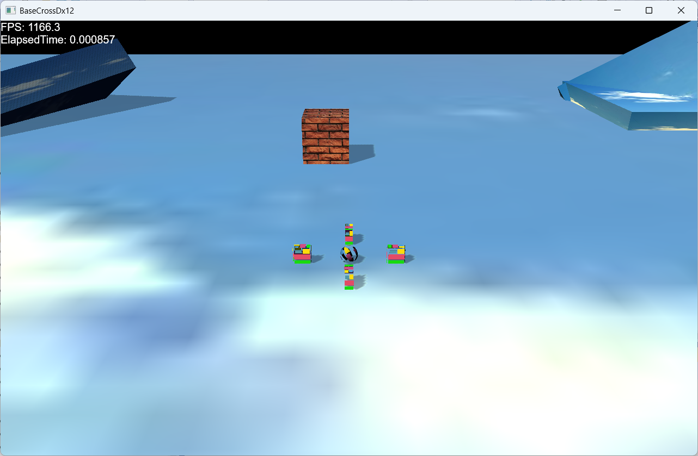
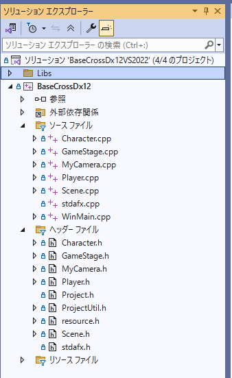

BaseCrossDx12ドキュメント
【Sample101】スタンダードな最初のサンプル
このサンプルは
Samples/Sample101ディレクトリ内にあります。VisualStdioで該当ソリューション（VS2022で
BaseCrossDx12VS2022.sln）を開いてください。ビルド後実行すると、以下の画面が現れます。

ソリューションエクスプローラーは以下のようになっています。

リソースの登録
まず、このプロジェクトで使用する
リソースを登録します。
リソースとはテクスチャやメッシュなど、複数オブジェクトに実装されるデータを使いまわしできるように登録することです。
このサンプルでは
Scene.cppで行っています。
void Scene::CreateAssetResources(ID3D12Device* pDevice, ID3D12GraphicsCommandList* pCommandList)
{
//テクスチャ
auto texFile = App::GetRelativeAssetsDir() + L"wall.jpg";
auto texture = BaseTexture::CreateTextureFlomFile(pCommandList, texFile);
RegisterTexture(L"WALL_TX", texture);
texFile = App::GetRelativeAssetsDir() + L"sky.jpg";
texture = BaseTexture::CreateTextureFlomFile(pCommandList, texFile);
RegisterTexture(L"SKY_TX", texture);
texFile = App::GetRelativeAssetsDir() + L"trace.png";
texture = BaseTexture::CreateTextureFlomFile(pCommandList, texFile);
RegisterTexture(L"TRACE_TX", texture);
texFile = App::GetRelativeAssetsDir() + L"trace3.png";
texture = BaseTexture::CreateTextureFlomFile(pCommandList, texFile);
RegisterTexture(L"TRACE3_TX", texture);
//ステージ作成
ResetActiveStage<GameStage>(pDevice);
}
このようにここではいくつかのテクスチャをリソースとして登録しています。
こうすることで今後、例えば
L"WALL_TX"という名前でこのテクスチャを設定することができます。
カメラの定義
このプロジェクトのカメラは
MyCamera.h/cppに記述されます。
PerspecCamera（遠近法カメラ）を継承して作ります。
MyCamera.h
以下は宣言です。
//--------------------------------------------------------------------------------------
// MyCameraカメラ
//--------------------------------------------------------------------------------------
class MyCamera : public PerspecCamera {
std::weak_ptr<GameObject> m_TargetObject; //目標となるオブジェクト
float m_ToTargetLerp; //目標を追いかける際の補間値
Vec3 m_TargetToAt; //目標から視点を調整する位置ベクトル
float m_RadY;
float m_RadXZ;
//カメラの上下スピード
float m_CameraUpDownSpeed;
//カメラを下げる下限角度
float m_CameraUnderRot;
//腕の長さの設定
float m_ArmLen;
float m_MaxArm;
float m_MinArm;
//回転スピード
float m_RotSpeed;
//ズームスピード
float m_ZoomSpeed;
//左右スティック変更のモード
bool m_LRBaseMode;
//上下スティック変更のモード
bool m_UDBaseMode;
public:
//--------------------------------------------------------------------------------------
/*!
@brief コンストラクタ
*/
//--------------------------------------------------------------------------------------
MyCamera();
//--------------------------------------------------------------------------------------
/*!
@brief コンストラクタ
@param[in] ArmLen 最初のArmの長さ
*/
//--------------------------------------------------------------------------------------
MyCamera(float ArmLen);
//--------------------------------------------------------------------------------------
/*!
@brief デストラクタ
*/
//--------------------------------------------------------------------------------------
virtual ~MyCamera();
//--------------------------------------------------------------------------------------
/*!
@brief カメラの位置を設定する
@param[in] Eye カメラ位置
@return なし
*/
//--------------------------------------------------------------------------------------
virtual void SetEye(const Vec3& Eye)override;
//--------------------------------------------------------------------------------------
/*!
@brief カメラの位置を設定する
@param[in] x x位置
@param[in] y y位置
@param[in] z z位置
@return なし
*/
//--------------------------------------------------------------------------------------
virtual void SetEye(float x, float y, float z)override;
//--------------------------------------------------------------------------------------
/*!
@brief カメラの目標オブジェクトを得る
@return カメラの目標
*/
//--------------------------------------------------------------------------------------
std::shared_ptr<GameObject> GetTargetObject() const;
//--------------------------------------------------------------------------------------
/*!
@brief カメラの目標オブジェクトを設定する
@param[in] Obj カメラの目標オブジェクト
@return なし
*/
//--------------------------------------------------------------------------------------
void SetTargetObject(const std::shared_ptr<GameObject>& Obj);
//--------------------------------------------------------------------------------------
/*!
@brief オブジェクトを追いかける場合の補間値を得る
@return オブジェクトを追いかける場合の補間値
*/
//--------------------------------------------------------------------------------------
float GetToTargetLerp() const;
//--------------------------------------------------------------------------------------
/*!
@brief オブジェクトを追いかける場合の補間値を設定する
@param[in] f オブジェクトを追いかける場合の補間値
@return なし
*/
//--------------------------------------------------------------------------------------
void SetToTargetLerp(float f);
//--------------------------------------------------------------------------------------
/*!
@brief EyeとAtの距離を得る
@return EyeとAtの距離
*/
//--------------------------------------------------------------------------------------
float GetArmLengh() const;
//--------------------------------------------------------------------------------------
/*!
@brief EyeとAtの距離を更新する（現在のEyeとAtから求める）
@return なし
*/
//--------------------------------------------------------------------------------------
void UpdateArmLengh();
//--------------------------------------------------------------------------------------
/*!
@brief EyeとAtの距離の最大値を得る
@return EyeとAtの距離の最大値
*/
//--------------------------------------------------------------------------------------
float GetMaxArm() const;
//--------------------------------------------------------------------------------------
/*!
@brief EyeとAtの距離の最大値を設定する
@param[in] f EyeとAtの距離の最大値
@return なし
*/
//--------------------------------------------------------------------------------------
void SetMaxArm(float f);
//--------------------------------------------------------------------------------------
/*!
@brief EyeとAtの距離の最小値を得る
@return EyeとAtの距離の最小値
*/
//--------------------------------------------------------------------------------------
float GetMinArm() const;
//--------------------------------------------------------------------------------------
/*!
@brief EyeとAtの距離の最小値設定する
@param[in] f EyeとAtの距離の最小値
@return なし
*/
//--------------------------------------------------------------------------------------
void SetMinArm(float f);
//--------------------------------------------------------------------------------------
/*!
@brief 回転スピードを得る
@return 回転スピード（0.0f以上）
*/
//--------------------------------------------------------------------------------------
float GetRotSpeed() const;
//--------------------------------------------------------------------------------------
/*!
@brief 回転スピードを設定する
@param[in] f 回転スピード（マイナスを入力してもプラスになる）
@return なし
*/
//--------------------------------------------------------------------------------------
void SetRotSpeed(float f);
//--------------------------------------------------------------------------------------
/*!
@brief ターゲットからAtへの調整ベクトルを得る
@return ターゲットからAtへの調整ベクトル
*/
//--------------------------------------------------------------------------------------
Vec3 GetTargetToAt() const;
//--------------------------------------------------------------------------------------
/*!
@brief ターゲットからAtへの調整ベクトルを設定する
@param[in] v ターゲットからAtへの調整ベクトルを
@return なし
*/
//--------------------------------------------------------------------------------------
void SetTargetToAt(const Vec3& v);
//--------------------------------------------------------------------------------------
/*!
@brief Rスティックの左右変更をBaseモードにするかどうかを得る
@return Baseモードならtrue（デフォルト）
*/
//--------------------------------------------------------------------------------------
bool GetLRBaseMode() const;
//--------------------------------------------------------------------------------------
/*!
@brief Rスティックの左右変更をBaseモードにするかどうかを得る
@return Baseモードならtrue（デフォルト）
*/
//--------------------------------------------------------------------------------------
bool IsLRBaseMode() const;
//--------------------------------------------------------------------------------------
/*!
@brief Rスティックの左右変更をBaseモードにするかどうかを設定する
@param[in] b Baseモードならtrue
@return なし
*/
//--------------------------------------------------------------------------------------
void SetLRBaseMode(bool b);
//--------------------------------------------------------------------------------------
/*!
@brief Rスティックの上下変更をBaseモードにするかどうかを得る
@return Baseモードならtrue（デフォルト）
*/
//--------------------------------------------------------------------------------------
bool GetUDBaseMode() const;
//--------------------------------------------------------------------------------------
/*!
@brief Rスティックの上下変更をBaseモードにするかどうかを得る
@return Baseモードならtrue（デフォルト）
*/
//--------------------------------------------------------------------------------------
bool IsUDBaseMode() const;
//--------------------------------------------------------------------------------------
/*!
@brief Rスティックの上下変更をBaseモードにするかどうかを設定する
@param[in] b Baseモードならtrue
@return なし
*/
//--------------------------------------------------------------------------------------
void SetUDBaseMode(bool b);
//--------------------------------------------------------------------------------------
/*!
@brief カメラの視点を設定する
@param[in] At 視点位置
@return なし
*/
//--------------------------------------------------------------------------------------
virtual void SetAt(const Vec3& At)override;
//--------------------------------------------------------------------------------------
/*!
@brief カメラの視点を設定する
@param[in] x x位置
@param[in] y y位置
@param[in] z z位置
@return なし
*/
//--------------------------------------------------------------------------------------
virtual void SetAt(float x, float y, float z)override;
//--------------------------------------------------------------------------------------
/*!
@brief 更新処理
@return なし
*/
//--------------------------------------------------------------------------------------
virtual void OnUpdate(double elapsedTime)override;
};
実装内容はコメントの通りです。これは、プレイヤーをはじめ、他のオブジェクトでも参照されます。
配置オブジェクトの定義
Player.h/cpp
このサンプルはコントローラーで操作できます。コントローラーを動かすと、Playerに見立てたボールを動かすことができます。以下は
Playerクラスです。
//--------------------------------------------------------------------------------------
/// プレイヤー
//--------------------------------------------------------------------------------------
class Player : public GameObject {
//プレイヤーが使用するコントローラとキーボードの入力
Vec2 GetInputState() const;
// コントローラから方向ベクトルを得る
Vec3 GetMoveVector() const;
//プレイヤーの移動
void MovePlayer();
//入力ハンドラー
InputHandler<Player> m_InputHandler;
//スピード
float m_Speed;
public:
Player(const std::shared_ptr<Stage>& StagePtr, const TransParam& param);
virtual ~Player() {}
//構築時処理
virtual void OnCreate()override;
//更新時処理
virtual void OnUpdate(double elapsedTime);
//Aボタン
void OnPushA();
//Bボタン
void OnPushB(){}
};
以下、実体です。
Player.cppに記述されます。
void Player::OnCreate() {
GetStage()->SetSharedGameObject(L"Player",GetThis<Player>());
auto ptrShadow = AddComponent<Shadowmap>();
ptrShadow->AddBaseMesh(L"DEFAULT_SPHERE");
//CollisionSphere衝突判定を付ける
auto ptrColl = AddComponent<CollisionSphere>();
//重力をつける
auto ptrGra = AddComponent<Gravity>();
auto ptrDraw = AddComponent<BcPNTStaticDraw>();
ptrDraw->AddBaseMesh(L"DEFAULT_SPHERE");
ptrDraw->AddBaseTexture(L"TRACE3_TX");
//透明処理
SetAlphaActive(true);
//カメラを得る
auto ptrCamera = std::dynamic_pointer_cast<MyCamera>(GetStage()->GetCamera());
if (ptrCamera) {
//MyCameraである
//MyCameraに注目するオブジェクト（プレイヤー）の設定
ptrCamera->SetTargetObject(GetThis<GameObject>());
ptrCamera->SetTargetToAt(Vec3(0, 0.25f, 0));
}
}
ここで
AddComponent関数によっていくつかのコンポーネントが設定されています。
auto ptrShadow = AddComponent<Shadowmap>();
ptrShadow->AddBaseMesh(L"DEFAULT_SPHERE");
//CollisionSphere衝突判定を付ける
auto ptrColl = AddComponent<CollisionSphere>();
//重力をつける
auto ptrGra = AddComponent<Gravity>();
auto ptrDraw = AddComponent<BcPNTStaticDraw>();
ptrDraw->AddBaseMesh(L"DEFAULT_SPHERE");
ptrDraw->AddBaseTexture(L"TRACE3_TX");
がコンポーネント関連の処理です。
CollisionSphereは球体の衝突判定です。
Gravityは重力です。以上が更新系のコンポーネントです。
Shadowmapは影を作成するコンポーネントです。
BcPNTStaticDrawは描画系のコンポーネントでスタティックなメッシュに適用します。ここでの
PNTは
ポジション、法線、テクスチャを含む頂点フォーマットという意味です。
ptrDraw->AddBaseTexture(L"TRACE3_TX");
という記述は、
Scene::CreateAssetResources関数でリソース登録したテクスチャです。
また
ptrDraw->AddBaseMesh(L"DEFAULT_SPHERE");
という記述で
L"DEFAULT_SPHERE"という名前のメッシュを設定しています。
L"DEFAULT_なんたら"という記述は、あらかじめ登録されているプリミティブな形状のメッシュを使います。
登録されている形状は、ベーシックライブラリ中
BaseScene::CreateDefaultResources関数で登録されています。
ここでは、プレイヤーの更新処理を行います。
void Player::OnUpdate(double elapsedTime) {
//コントローラチェックして入力があればコマンド呼び出し
m_InputHandler.PushHandle(GetThis<Player>());
MovePlayer();
}
ここでは、コントローラの状態を検証し、もしAボタンが押されたら
Player::OnPushA関数が呼ばれる処理を書きます。
続いて
MovePlayer();呼び出して、コントローラの状態に合わせ、プレイヤーを動かします。
void Player::MovePlayer() {
float elapsedTime = (float)Scene::GetElapsedTime();
auto angle = GetMoveVector();
if (angle.length() > 0.0f) {
auto pos = GetComponent<Transform>()->GetPosition();
pos += angle * elapsedTime * m_Speed;
GetComponent<Transform>()->SetPosition(pos);
}
//回転の計算
if (angle.length() > 0.0f) {
auto utilPtr = GetBehavior<UtilBehavior>();
utilPtr->RotToHead(angle, 1.0f);
}
}
ここで呼び出されている
GetMoveVector関数は以下です。
Vec3 Player::GetMoveVector() const {
Vec3 angle(0, 0, 0);
//入力の取得
auto inPut = GetInputState();
float moveX = inPut.x;
float moveZ = inPut.y;
if (moveX != 0 || moveZ != 0) {
float moveLength = 0; //動いた時のスピード
auto ptrTransform = GetComponent<Transform>();
auto ptrCamera = GetStage()->GetCamera();
//進行方向の向きを計算
auto front = ptrTransform->GetPosition() - ptrCamera->GetEye();
front.y = 0;
front.normalize();
//進行方向向きからの角度を算出
float frontAngle = atan2(front.z, front.x);
//コントローラの向き計算
Vec2 moveVec(moveX, moveZ);
float moveSize = moveVec.length();
//コントローラの向きから角度を計算
float cntlAngle = atan2(-moveX, moveZ);
//トータルの角度を算出
float totalAngle = frontAngle + cntlAngle;
//角度からベクトルを作成
angle = Vec3(cos(totalAngle), 0, sin(totalAngle));
//正規化する
angle.normalize();
//移動サイズを設定。
angle *= moveSize;
//Y軸は変化させない
angle.y = 0;
}
return angle;
}
ここで呼び出されている
GetInputState関数は以下です。
Vec2 Player::GetInputState() const {
Vec2 ret;
//コントローラの取得
auto cntlVec = App::GetInputDevice().GetControlerVec();
ret.x = 0.0f;
ret.y = 0.0f;
WORD wButtons = 0;
if (cntlVec[0].bConnected) {
ret.x = cntlVec[0].fThumbLX;
ret.y = cntlVec[0].fThumbLY;
}
return ret;
}
このように
- コントローラの状態を取得（Player::GetInputState()）
- 進行方向を決定（Player::GetMoveVector()）
- プレイヤーを移動（Player::MovePlayer）
- プレイヤーの更新（Player::OnUpdate）
と構造的（関数に小分け）にメンバ関数が呼ばれているのが分かります。
Character.h/cpp
このサンプルに配置されるオブジェクトは、主に
Character.h/cppに記述されます。
記述されているオブジェクトは以下の通り。
- FixedBoxクラス
- WallBoxクラス
- SeekObjectクラス
この中で
SeekObjectクラスは
ステートマシンというAIクラスが含んでいます。
FixedBoxクラスの宣言は以下の通りです。
//--------------------------------------------------------------------------------------
// ボックスオブジェクト
//--------------------------------------------------------------------------------------
class FixedBox : public GameObject {
public:
FixedBox(const std::shared_ptr<Stage>& stage, const TransParam& param);
virtual ~FixedBox();
//構築時
virtual void OnCreate()override;
//更新時
virtual void OnUpdate(double elapsedTime)override {}
};
FixedBoxクラスは動くことがない直方体オブジェクトです。
初期設定で設定すれば、プレイヤーやその他の動くオブジェクトに影響されることはありません。
void FixedBox::OnCreate() {
ID3D12GraphicsCommandList* pCommandList = BaseScene::Get()->m_pTgtCommandList;
//OBB衝突j判定を付ける
auto ptrColl = AddComponent<CollisionObb>();
ptrColl->SetFixed(true);
//タグをつける
AddTag(L"FixedBox");
auto ptrShadow = AddComponent<Shadowmap>();
ptrShadow->AddBaseMesh(L"DEFAULT_CUBE");
auto ptrDraw = AddComponent<BcPNTStaticDraw>();
ptrDraw->AddBaseMesh(L"DEFAULT_CUBE");
ptrDraw->AddBaseTexture(L"SKY_TX");
ptrDraw->SetOwnShadowActive(true);
}
ここではコンポーネント関連は、直方体（OBB）の衝突判定の
CollisionObbと
Shadowmap、そして
BcPNTStaticDrawが設定されています。
CollisionObbの
ptrColl->SetFixed(true);
は、ほかの影響を受けない設定です。
また
OnUpdate関数は何もしてません。
WallBoxクラスの宣言は以下の通りです。
//--------------------------------------------------------------------------------------
// 四角のオブジェクト
//--------------------------------------------------------------------------------------
class WallBox : public GameObject {
double m_totalTime;
protected:
public:
WallBox(const std::shared_ptr<Stage>& stage, const TransParam& param);
virtual ~WallBox();
virtual void OnCreate();
virtual void OnUpdate(double elapsedTime);
};
WallBoxクラスは自分自身も行ったり来たりしながら、プレイヤーなどに衝突すると影響を受けて位置を移動させられます。
簡単な敵キャラの動きに応用できると思います。
void WallBox::OnCreate() {
//OBB衝突j判定を付ける
auto ptrColl = AddComponent<CollisionObb>();
//重力をつける
auto ptrGra = AddComponent<Gravity>();
auto ptrShadow = AddComponent<Shadowmap>();
ptrShadow->AddBaseMesh(L"DEFAULT_CUBE");
auto ptrDraw = AddComponent<BcPNTStaticDraw>();
ptrDraw->AddBaseMesh(L"DEFAULT_CUBE");
ptrDraw->AddBaseTexture(L"WALL_TX");
ptrDraw->SetOwnShadowActive(true);
}
コンポーネントは
CollisionObb、Gravity、Shadowmap、BcPNTStaticDrawが設定されます。
このオブジェクトは自分自身も動くので、
WallBox::OnUpdate関数も実装します。
void WallBox::OnUpdate(double elapsedTime) {
//Transformコンポーネントを取り出す
auto ptrTrans = GetComponent<Transform>();
auto& param = ptrTrans->GetTransParam();
m_totalTime += elapsedTime;
if (m_totalTime >= XM_2PI) {
m_totalTime = 0.0;
}
param.position.x = (float)sin(m_totalTime) * 2.0f;
}
ここではメンバ変数
m_totalTimeに
elapsedTimeを足してそれをもとに
sinカーブを作り出し、それをx座標に代入します。簡単なAI処理と言えます。
このサンプルでは、起動直後からプレイヤーを追いかけまわすオブジェクトがあります。
これは
SeekObjectクラスです。以下宣言です。
//--------------------------------------------------------------------------------------
// 追いかける配置オブジェクト
//--------------------------------------------------------------------------------------
class SeekObject : public GameObject {
//ステートマシーン
std::unique_ptr< StateMachine<SeekObject> > m_StateMachine;
Vec3 m_StartPos;
float m_StateChangeSize;
//フォース
Vec3 m_Force;
//速度
Vec3 m_Velocity;
public:
//構築と破棄
SeekObject(const std::shared_ptr<Stage>& StagePtr, const Vec3& startPos);
virtual ~SeekObject();
//初期化
virtual void OnCreate() override;
//アクセサ
const std::unique_ptr<StateMachine<SeekObject>>& GetStateMachine() {
return m_StateMachine;
}
float GetStateChangeSize() const {
return m_StateChangeSize;
}
const Vec3& GetForce()const {
return m_Force;
}
void SetForce(const Vec3& f) {
m_Force = f;
}
void AddForce(const Vec3& f) {
m_Force += f;
}
const Vec3& GetVelocity()const {
return m_Velocity;
}
void SetVelocity(const Vec3& v) {
m_Velocity = v;
}
void ApplyForce();
Vec3 GetTargetPos()const;
//操作
virtual void OnUpdate(double elapsedTime) override;
};
このオブジェクトは
ステートマシンという仕組みが実装されています。
例えば
OnUpdate処理で、いろんな条件次第で動きを変えたいときがあります。簡単な分岐であれば
if else 文や、
switch 文などで分岐できますが、複雑な処理になると不具合が出やすくなります。
そんなときは、オブジェクトに、複数の
ステート（状態）というクラスを用意して、何かの条件でそれらのステートを適応して更新処理を記述します。そうすることで可読性が高くなるばかりでなく、不具合も少なくなります。
ステートマシンを実装するには、まず、メンバ変数に
//ステートマシーン
std::unique_ptr< StateMachine<SeekObject> > m_StateMachine;
のような変数を用意します。
そのうえで、必要なステートクラスを実装します。
以下は、その中の
SeekFarStateです。
//--------------------------------------------------------------------------------------
// class SeekFarState : public ObjState<SeekObject>;
// 用途: プレイヤーから遠いときの移動
//--------------------------------------------------------------------------------------
class SeekFarState : public ObjState<SeekObject>
{
SeekFarState() {}
public:
static std::shared_ptr<SeekFarState> Instance();
virtual void Enter(const std::shared_ptr<SeekObject>& Obj)override;
virtual void Execute(const std::shared_ptr<SeekObject>& Obj)override;
virtual void Exit(const std::shared_ptr<SeekObject>& Obj)override;
};
コンストラクタはprivateにしておきます。オブジェクトの生成は、staticなInstance関数で行います。
ステートは
Enter、Execute、Exit関数を用意します
この関数はこのステートに入った時に、一度だけ呼ばれます。
この関数はEnter関数が呼ばれた次のターンから、毎ターン呼ばれます。
この関数はこのステートから抜けるときに一度だけばれます。